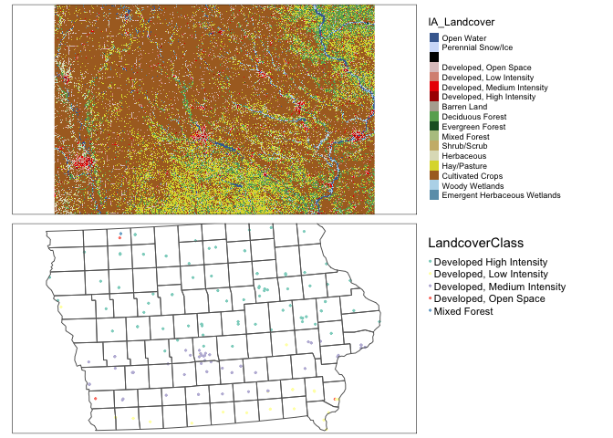

Project: Download secondary data
GEOG-364 - Spatial Analysis
knitr::opts_chunk$set(echo = TRUE, warning=FALSE, message = FALSE)Required libraries
library(sp)
library(sf)
library(elevatr)
library(USAboundaries)
library(raster)
library(tidycensus)
library(rnaturalearth)
library(tmap)
library(exactextractr)
library(units)
library(readxl)
library(FedData)Reading in CSV and XLSX data
My example tutorial is set in Iowa. First, I will download two data-sets, a point dataset on farmers markets, and the Iowan SVI data. I then merge in other data-sets.
All xlsx and csv files
Make sure that library(readxl) , library(sp) and library(sf) are in your library code chunk at the top.
Some point data might be stored in Shapefile format. If so, load directly as an sf variable using the next tutorial.
Other point data is stored as a csv, a text file or as an excel file.
To read this data in, see (Tutorial 6a)[https://psu-spatial.github.io/Geog364-2021/pg_Tut6_input_output.html#Tutorial_6A:_Reading_in_Excel_Files] and (Tutorial 6b)[https://psu-spatial.github.io/Geog364-2021/pg_Tut6_input_output.html#Tutorial_6B:_Reading_in_csv_Files].
(This link contains the csv used in this tutorial of Iowan farmers markets)[https://github.com/psu-spatial/Geog364.data-2020/raw/main/Point_Iowa_FarmersMarket/Farmers_Markets.xlsx]
I downloaded this, then read it into R, made it spatial, changed the map projection and made a quick plot.
IA_farmersmarket <- readxl::read_excel("Farmers_Markets.xlsx")
names(IA_farmersmarket)## [1] "X" "Y" "FID" "City" "County"
## [6] "Latitude" "Location" "Longitude" "Market_Name" "Open_Dates"
## [11] "Open_Hours" "State" "Weekday"# Note, X and Y because that's what the columns are called.
# I know that it was in lat/long originally, hence the crs
IA_farmersmarket.sf <- st_as_sf(IA_farmersmarket,coords=c("X","Y"),crs=4326)
# And change to a map projection of your choice. I am choosing UTM Iowa
IA_farmersmarket.sf <- st_transform(IA_farmersmarket.sf,3744)
# make a quick plot
tmap_mode("view")
qtm(st_geometry(IA_farmersmarket.sf))Trouble shooting
You can see in the plot above that there appears to be one point that is not in Iowa. So now I will look at the long/lat columns.
summary(IA_farmersmarket$X)## Min. 1st Qu. Median Mean 3rd Qu. Max.
## -96.56 -94.37 -93.10 -93.12 -91.78 -87.12hist(IA_farmersmarket$X)
I feel that maybe that point at Long ~ -88 is wrong. Let’s take a look.
IA_farmersmarket[IA_farmersmarket$X > -90,]## # A tibble: 1 × 13
## X Y FID City County Latitude Location Longitude Market_Name
## <dbl> <dbl> <dbl> <chr> <chr> <dbl> <chr> <dbl> <chr>
## 1 -87.1 37.3 9 Central City LINN 37.3 South 5t… -87.1 Atlantic F…
## # … with 4 more variables: Open_Dates <chr>, Open_Hours <chr>, State <chr>,
## # Weekday <chr>I’m guessing there’s a typo - so I could just google this and fix it! but for now, let’s remove and try again.
# choose all the other ones, note the <= instead of >
IA_farmersmarket <- IA_farmersmarket[IA_farmersmarket$X <= -90,]
# Note, X and Y because that's what the columns are called.
# I know that it was in lat/long originally, hence the crs
IA_farmersmarket.sf <- st_as_sf(IA_farmersmarket,coords=c("X","Y"),crs=4326)
# And change to a map projection of your choice. I am choosing UTM Iowa
IA_farmersmarket.sf <- st_transform(IA_farmersmarket.sf,3744)
# make a quick plot
tmap_mode("view")
qtm(st_geometry(IA_farmersmarket.sf))Reading in Shapefiles
There’s also another example in (Tutorial 6C)[https://psu-spatial.github.io/Geog364-2021/pg_Tut6_input_output.html#Tutorial_6C:_Reading_in_%E2%80%9CShape_Files%E2%80%9D]
Downloading a Shapefile (point or polygon)
I’m going to use an SVI shape-file that we used in Lab 6. I have stored this on github, so I can download it directly. Note, a shape-file is a group of files TOGETHER that are often stored in a single folder.
(This link contains the Shapefile used in this tutorial of Iowan SVI data)[<https://github.com/psu-spatial/Geog364.data-2020/raw/main/Polygon_SVI_Iowa_shp/Iowa_COUNTY_SVI.zip>]. I downloaded it and put it in my project folder. I downloaded a zip file

You can unzip the file this using this command, or double click on the zip file on your computer.
unzip("Iowa_COUNTY_SVI.zip")This should unzip all the files into your project folder. Note that the file-names might be different to the zipfile name!

Sometimes this will unzip these into a sub-folder. You can deal with this, but it is easier to just move ALL the sub-files into the main project folder.
Opening a Shapefile
Make sure that library(sp) and library(sf) are in your library code chunk at the top.
The command to read in any shapefile is st_read() from the sf library. Set it to read in the .shp extension. You should see something like this, but remember that you can suppress output using message=FALSE,warning=FALSE and results=FALSE at the top of the code chunk.
# Note the .shp extension
# and that the filename is different to the zip file name!
SVI_county.sf <- st_read("SVI2018_IOWA_county.shp")## Reading layer `SVI2018_IOWA_county' from data source
## `/Users/hlg5155/Dropbox/My Mac (E2-GEO-WKML011)/Documents/GitHub/Teaching/Geog364-2021/SVI2018_IOWA_county.shp'
## using driver `ESRI Shapefile'
## Simple feature collection with 99 features and 125 fields
## Geometry type: POLYGON
## Dimension: XY
## Bounding box: xmin: -96.6397 ymin: 40.3755 xmax: -90.14006 ymax: 43.5012
## Geodetic CRS: NAD83# and change to a map projection of your choice. I am choosing UTM Iowa
SVI_county.sf <- st_transform(SVI_county.sf,3744)To check it worked, click on the name of the variable in the environment tab and plot the geometry
#Remember st_geometry removes the marks.
plot(st_geometry(SVI_county.sf))
Troubleshooting
Sometimes you will get this error.

This means that it can’t find the file. There are three common reasons for this.
- You didn’t create a project, or open you didn’t open R-studio by double clicking your project file. If you have no idea what I mean, see (Tutorial 2C)[https://psu-spatial.github.io/Geog364-2021/pg_Tut2_startup.html#Tutorial_2C:_Create_an_R-Project].
- You unzipped your shape-file into a different place. You should be able to see them next to your code in your files tab with zero sub-folders.
- You mis-typed the file-name. It is case sensitive and requires the .shp at the end.
Let’s see what I did wrong. Here is my screen. You can see that I am running my R-project correctly (red circles) and I have unzipped all my files correctly. But! I got the wrong file name.

Reading in data from the US Census
The get_acs command
Make sure library(tidycensus) , library(units) ,library(sp) , library(sf) and library(tmap) are loaded in your library code chunk.
This is useful for population density!
There are full tutorials in (Tutorial 6Ce)[https://psu-spatial.github.io/Geog364-2021/pg_Tut2_startup.html#Tutorial_2C:_Create_an_R-Project] and in (Lab 7)[https://psu-spatial.github.io/Geog364-2021/pg_364Lab7_Regression_2021.html#Download_the_data_from_ACS].
Here is all of the code together:
# Download some data for Iowa using get_acs
ACS_county.sf <- get_acs(geography = "county",
year = 2019,
variables = c(housevalue = "B25075_001", # house value
total_pop = "B05012_001", # total population
total_house = "B25001_001", # total housing units
med.income = "B19013_001"), # median income
state = c("IA"),
survey = "acs5",geometry=TRUE,
output = "wide")
# Change the map projection to UTM Iowa
ACS_county.sf <- st_transform(ACS_county.sf,3744)
# Get the areas
ACS_county.sf$County.areaE <- st_area(ACS_county.sf)
# Change the units of the areas from metres squared to km squared and overwrite
ACS_county.sf$County.areaE <- set_units(ACS_county.sf$County.areaE,"km^2")
# and divide the total population by the area
ACS_county.sf$PopulationDensityE <-ACS_county.sf$total_popE / ACS_county.sf$County.areaE
# check it worked. Iowa is a boring state!
map_totalpop <- qtm(ACS_county.sf,"total_popE")+tm_layout(legend.outside = TRUE)
map_area <- qtm(ACS_county.sf,"County.areaE")+tm_layout(legend.outside = TRUE)
map_popdens <- qtm(ACS_county.sf,"PopulationDensityE")+tm_layout(legend.outside = TRUE)
tmap_mode("plot")
suppressWarnings(tmap_arrange(map_totalpop,map_area,map_popdens))
# clean up your workspace, optional but good practice unless you later need this map
rm(map_totalpop); rm(map_area); rm(map_popdens)Dealing with non-Normal data (e.g. population density)
Population density, wealth and housing density are often very skewed, making the statistics hard. To get around this and to see more detail outside cities, we can take the log and save as a new column. For example
ACS_county.sf$Log_PopulationDensityE <- log(ACS_county.sf$PopulationDensityE)Comparing histograms
par(mfrow=c(1,2))
hist(ACS_county.sf$PopulationDensityE,
main=list("Population Density",cex=.7),xlab=list("Population Density",cex=.7))
hist(ACS_county.sf$Log_PopulationDensityE,
main=list("Log Population Density per Km^2",cex=.7),xlab=list("log Population Density per Km^2",cex=.7))
Comparing maps
map_popdens <- qtm(ACS_county.sf,"PopulationDensityE",fill.palette="RdPu")+
tm_layout(legend.outside = TRUE)
map_logpopdens <- qtm(ACS_county.sf,"Log_PopulationDensityE",fill.palette="RdPu")+
tm_layout(legend.outside = TRUE)
tmap_arrange(map_popdens,map_logpopdens)
Reading in data for political borders
There are many ways of doing this, see (Tutorial 11)[https://psu-spatial.github.io/Geog364-2021/pg_Tut11_spatial101.html#c_Using_RNaturalEarth_built-in_vector_datasets] for more detail.
Country, State borders
I am going to use the rnaturalearth package. Make sure library(rnaturalearth) is in your library code chunk at the top.
# world borders, read in
border.country.world.sf <- ne_countries(returnclass = "sf")
# US States
border.state.USA.sf <- ne_states(country="united states of america",returnclass = "sf")
# Make a plot to check
plot(st_geometry(border.country.world.sf),border="red")
plot(st_geometry(border.state.USA.sf),col="light blue",add=TRUE)
# change projection so the maps overlay just over the Iowa area
border.state.USA.sf <- st_transform(border.state.USA.sf,3744)
plot(st_geometry(IA_farmersmarket.sf),col=rgb(0,0,0,.5),pch=16)
plot(st_geometry(border.state.USA.sf),border="red",add=TRUE)
Counties and census tracts for the USA
This is often easist to do by using get_acs (see below), but if you really want borders, then the USAboundaries() package is your best bet.
border.county.IA.sf <- us_counties(states="Iowa")
border.county.IA.sf <- st_transform(border.county.IA.sf,3744)
plot(st_geometry(IA_farmersmarket.sf),col=rgb(0,0,0,.5),pch=16)
plot(st_geometry(border.state.USA.sf),add=TRUE,border="red")
plot(st_geometry(border.county.IA.sf),add=TRUE,border="blue")
Coastlines and reef borders
For those doing coastline projects, you can also download coastline and reef data using rnaturalearth
coast.world.sf <- ne_coastline(returnclass = "sf")
reefs.world.sf <- ne_download( scale = 'large', category="physical", type = 'reefs' ,returnclass = "sf")
plot(st_geometry(reefs.world.sf),col="blue")
plot(st_geometry(coast.world.sf),add=TRUE)
Reading in Elevation data
Make sure that library(elevatr) and library(raster) are in your library code chunk at the top.
The elevatr package will allow you to download elevation data for a spatial area of your choice. It might break on the cloud. If so, let Dr G know - she can download you a subset.
Here we can extract elevation data just for the area we care about. E.g. here, I will extract for my farmers market data and my county SVI data.
REMEMBER TO PUT results=FALSE IN YOUR CODE CHUNK OPTIONS HERE.
# YOU WILL ONLY NEED ONE OF THESE
# Here I downloaded elevation for the border of my SVI data
elevation.raster_SVI <- elevatr::get_elev_raster(SVI_county.sf, z = 5,clip="locations")
# here I downloaded elevation for the area around my farmers markets (R doesn't understand this is Iowa!)
elevation.raster_farm <- elevatr::get_elev_raster(IA_farmersmarket.sf, z = 5,clip="locations")
# here I downloaded it for the border of Iowa itself using my counties
elevation.raster_IA <- elevatr::get_elev_raster(border.county.IA.sf, z = 5,clip="locations")
# here I created a long/lat box
Lonbox <- c(-93,-93 ,-95,-95)
Latbox <- c( 41, 41.5, 41, 41.5)
box_LongLat <- data.frame(Lon=Lonbox,Lat=Latbox)
box_LongLat.sf <- st_as_sf(box_LongLat,coords=c("Lon","Lat"),crs=4326)
box_LongLat.sf <- st_transform(box_LongLat.sf,3744)
elevation.raster_box <- elevatr::get_elev_raster(box_LongLat.sf, z = 5,clip="bbox")Note when I plot, the results look like they are on a globe because of the UTM map projection.
# set up a 2x3 grid of plots
par(mfrow=c(2,2))
# plot 1
plot(elevation.raster_SVI)
plot(st_geometry(SVI_county.sf),add=TRUE)
# plot 2
plot(elevation.raster_farm)
plot(st_geometry(IA_farmersmarket.sf),add=TRUE)
plot(st_geometry(border.state.USA.sf),add=TRUE)
# plot 3
plot(elevation.raster_IA)
plot(st_geometry(border.county.IA.sf),add=TRUE)
# plot 4
plot(elevation.raster_box)
plot(st_geometry(border.county.IA.sf),add=TRUE)
Adding elevation data to your points or polygon data
Make sure that library(exactextractr) and library(raster) are in your library code chunk at the top.
We can simply use this package to extract the value at our locations - I’m choosing the average over the polygon. To extract
# add to polygon data
SVI_county.sf$Elevation_extracted <- exact_extract(elevation.raster_SVI,SVI_county.sf,"mean")For point data, we choose simply the extract function.
# add to point data
IA_farmersmarket.sf$Elevation_extracted <- raster::extract(elevation.raster_farm,IA_farmersmarket.sf)Click on the name of your dataset, you will see there is a new column called elevation. Here is what we have done
# plot 1
map1 <- qtm(elevation.raster_SVI)+tm_layout(legend.outside = TRUE)
map2 <- qtm(SVI_county.sf,"Elevation_extracted")+tm_layout(legend.outside = TRUE)
map3 <- qtm(elevation.raster_farm)+tm_layout(legend.outside = TRUE)
map4 <- qtm(IA_farmersmarket.sf,dots.col="Elevation_extracted")+
tm_shape(border.county.IA.sf)+tm_polygons(alpha=0)+
tm_layout(legend.outside = TRUE)
tmap_arrange(map1,map2,map3,map4)
rm(map1);rm(map2);rm(map3);rm(map4)Reading in Weather data
THIS ALSO INCLUDES A GREAT TUTORIAL ON CALCULATING CLIMATE TRENDS
Make sure thatlibrary(raster) is in your library code chunk at the top.
We can get weather data from worldclim. There is an excellent tutorial here: https://bedatablog.netlify.app/post/download-and-illustrate-current-and-projected-climate-in-r/
First, decide what weather data you want here https://worldclim.org/data/worldclim21.html and at what spatial resolution. You can then download it to your computer using this
# see here for where these came from: https://worldclim.org/data/worldclim21.html
# Beware: this downloads it to your computer. 2.5 minute resolution is ~ 50Mb!
worldprecip <- raster::getData(name = 'worldclim', var = 'prec', res = 2.5)The result includes one layer for each month that you can access using [[ ]] e.g. for January
par(mfrow= c(1,2))
plot(worldprecip[[1]],main="January Historical rainfall average")
plot(worldprecip[[7]],main="July Historical rainfall average")
Reading in Sea Surface Temperature data
Here’s the tutorial. Happy to help folks work through it in labs
Reading in USA Land Cover Data, canopy or concrete
(contributed by Susan)
We can download land cover data from the National Land Cover Database (NLCD) (https://www.mrlc.gov/) using the FedData package. This package allows you to download other federal data as well including elevation, soil data from the SSURGO soil database, Daymet weather data, USDA cropland layers, hydrography, etc. See this link (https://github.com/ropensci/FedData) for more information about what data you can obtain using the FedData package. This link has example code for downloading all these data.
First we need to install the ‘FedData’ package. We do this the same way as for the high res data packages. Run this code IN YOUR CONSOLE.
remotes::install_github("ropensci/FedData")Now make sure that these packages are in the code chunk at the top of your script.
library(FedData)
library(sf)
library(sp)
library(USAboundaries)
library(raster)Just like elevation or any other raster, we can download just for the area of our study. See below for our Iowa example. You would simply replace with your own sf data and nickname.
If you want forest canopy or concrete areas see the get_nlcd helpfile.
First, let’s look at what the data means
landcover_legend <- nlcd_colors()
landcover_legend## # A tibble: 20 × 4
## ID Class Color Description
## <dbl> <chr> <chr> <chr>
## 1 11 Open Water #5475A8 Areas of open water, generally wi…
## 2 12 Perennial Ice/Snow #FFFFFF Areas characterized by a perennia…
## 3 21 Developed, Open Space #E8D1D1 Areas with a mixture of some cons…
## 4 22 Developed, Low Intensity #E29E8C Areas with a mixture of construct…
## 5 23 Developed, Medium Intensity #ff0000 Areas with a mixture of construct…
## 6 24 Developed High Intensity #B50000 Highly developed areas where peop…
## 7 31 Barren Land (Rock/Sand/Clay) #D2CDC0 Areas of bedrock, desert pavement…
## 8 41 Deciduous Forest #85C77E Areas dominated by trees generall…
## 9 42 Evergreen Forest #38814E Areas dominated by trees generall…
## 10 43 Mixed Forest #D4E7B0 Areas dominated by trees generall…
## 11 51 Dwarf Scrub #AF963C Alaska only areas dominated by sh…
## 12 52 Shrub/Scrub #DCCA8F Areas dominated by shrubs; less t…
## 13 71 Grassland/Herbaceous #FDE9AA Areas dominated by gramanoid or h…
## 14 72 Sedge/Herbaceous #D1D182 Alaska only areas dominated by se…
## 15 73 Lichens #A3CC51 Alaska only areas dominated by fr…
## 16 74 Moss #82BA9E Alaska only areas dominated by mo…
## 17 81 Pasture/Hay #FBF65D Areas of grasses, legumes, or gra…
## 18 82 Cultivated Crops #CA9146 Areas used for the production of …
## 19 90 Woody Wetlands #C8E6F8 Areas where forest or shrubland v…
## 20 95 Emergent Herbaceous Wetlands #64B3D5 Areas where perennial herbaceous …# THIS TAKE A LONG TIME TO RUN!
# IT WILL CRASH THE CLOUD. DR G or SUSAN CAN DOWNLOAD IT FOR YOU
# Here I downloaded land cover for the border of my SVI data. You can choose the nickname
NLCD_SVI <- get_nlcd(template = SVI_county.sf,year = 2011,label = "Iowa SVI landcover")
# here I downloaded land cover for the area around my farmers markets (R doesn't understand this is Iowa!)
NLCD_farm <- get_nlcd(template = IA_farmersmarket.sf,year = 2011,label = "Iowa farmers landcover")
# here I downloaded land cover for the border of Iowa itself using my counties
NLCD_IA <- get_nlcd(template = border.county.IA.sf,year = 2011,label = "Iowa landcover")Because it takes long to download large areas, it is better to save the landcover file to your project folder and load it from there instead of downloading it every time you knit your project.
#Save the landcover dataset to your project folder.
writeRaster(NLCD_IA,
filename = "IA_Landcover.tif",
format="GTiff", overwrite=TRUE)After you have successfully downloaded and saved the data to you project folder, you can load it into R using the following code.
If you can load the data successfully, you now do not need any of the above code which is basically for downloading and saving the file. I suggest commenting it out and hiding it in an “include=FALSE, eval-FALSE” code chunk so that you do not lose the code in the event you have to rerun.
IA_Landcover <- raster('IA_Landcover.tif')
tmap_mode("plot")
qtm(IA_Landcover)+tm_layout(legend.outside = TRUE)
Adding land cover data to your points dataset
Make sure that library(raster) is in your library code chunk at the top.
For point data, we choose simply the extract function. But it’s a bit more complex because landcover is a categorical code not a numerica value
# add to point data
extractedvalues <- data.frame(ID = raster::extract(NLCD_farm,
IA_farmersmarket.sf))
# add in codes
Newvalues <- merge(extractedvalues,nlcd_colors(),by="ID",all.x=TRUE,all.y=FALSE)
# and extract the codes
IA_farmersmarket.sf$LandcoverClass <- as.factor(Newvalues$Class)map1 <- qtm(IA_Landcover)+tm_layout(legend.outside = TRUE)
map2 <- qtm(IA_farmersmarket.sf,dots.col="LandcoverClass")+
tm_shape(border.county.IA.sf)+tm_polygons(alpha=0)+
tm_layout(legend.outside = TRUE)
tmap_arrange(map1,map2)
rm(map1);rm(map2)Adding land cover data to your polygons dataset
For polygons it’s even more complex because the “mean” landcover doesn’t make sense! I guess in that we want to choose the land-cover with the greatest area in your county.
# This is taking the most common value in each polygon
# add to polygon data
extractedvalues <- data.frame(ID=exact_extract(NLCD_SVI,SVI_county.sf,fun="majority"))
# add in codes
Newvalues <- merge(extractedvalues,nlcd_colors(),by="ID",all.x=TRUE,all.y=FALSE)
# and extract the codes
SVI_county.sf$Majority_LandcoverClass <- as.factor(Newvalues$Class)map1 <- qtm(IA_Landcover)+tm_layout(legend.outside = TRUE)
map2 <- qtm(SVI_county.sf,dots.col="Majority_LandcoverClass")+
tm_shape(border.county.IA.sf)+tm_polygons(alpha=0)+
tm_layout(legend.outside = TRUE)
tmap_arrange(map1,map2,nrow=2)
rm(map1);rm(map2)Any other raster
Put the raster in your project folder. This is likely a geotif (.tif) or a NetCDF file (.nc).
Read in the data using the raster command
WhatYouWantToCallYourVariable <- raster('FILENAME.tif')If your data is numeric, to extract for your points/polygons follow the tutorial in elevation
If your data is categorical, to extract for your points/polygons, follow the tutorial for landcover.